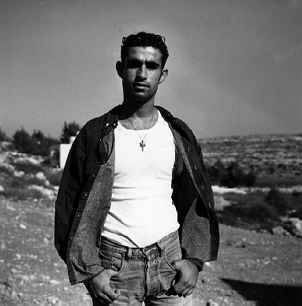

Since the beginning of the 1990s, Israel has increasingly blocked university students from studying at universities in the West Bank by means of restricting freedom of movement and rights of residence.

The permit system imposed by Israel on the students is arbitrary and discriminatory, and fails to consider the calendar of the academic setting. The system outlaws students collectively and without recourse.
The structure of Palestinian higher education requires that students from Gaza study at universities in the West Bank. Not all specialties are offered in Gaza and there is insufficient space for all graduates. Additionally, Palestinian students should be allowed to select the university most suitable for them.
Despite the transfer of responsibility for education to the Palestinian National Authority in 1994 and the designation of the West Bank and Gaza as "a single territorial unit" in the Oslo Accords, 1,300 university students from the Gaza Strip are still regularly prevented by Israel from studying at their universities in the West Bank.
In the last three academic years ALL 1,300 students have been denied permits MOST of the time. No permits have been issued to students since January 1996. An ordinary student who obeyed the permit system would have missed the entire 1995-96 academic year, the 1996-97 academic year and the first semester of the 1997-98 academic year to date.
Israeli authorities have branded Gaza students "illegal" and subjected them to harassment, arrest, and fines for nothing more than residing in the West Bank to pursue their education. In 1996 at Birzeit University alone sixty-six students from Gaza were arrested and imprisoned after being caught studying "illegally" in the West Bank.
Students residing in the West Bank do not pose a greater threat to Israeli security than those residing in the Gaza Strip. It is possible to address Israel's security concerns adequately without interfering with the students right to education.
Students today will form the leadership of Palestinian society in the years to come.